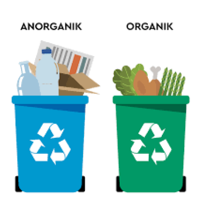
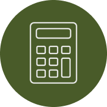

Search

Pemisahan Sampah Organik dan Anorganik
Layanan untuk memisahkan sampah Organik
dan Nonorganik secara optimal

Pemisahaan Sampah
Memberikan instuksi detail tentang cara memisahkan sampah dengan benar berdasarkan kategori organik dan nonorganik
Perhitungan Jumlah Sampah
Fitur untuk mengatur pengingat dan target pengurangan sampah berdasarkan data yang dikumpulkan

Daur Ulang
Informasi lengkap tentang jenis-jenis sampah berbahaya seperti baterai, bahan kimia, dan barang elektronik lainnya dan cara pemisahan sampah yang berbahaya dengan benar